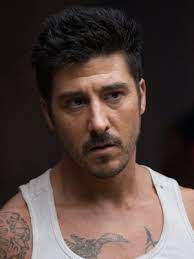

Le Parkour fut créé à la fin des années 80 par David Belle. Il eut l'idée du Parkour en s'inspirant des arts martiaux et du parcour d'entrainement
des pompiers militaire de paris, il s'est entrainé avec le groupe aujourd'hui connu sous le nom de Yamakasi ils sont mis environ 10 pour perfectionner
l'Art du déplacement qu'on appelle aujourd'hui le Parkour.

David Belle, né le 29 avril 1973 à Fécamp, est un sportif, cascadeur et acteur français. Il est l'un des fondateurs du parkour. En 1988, âgé de 15 ans,
Belle quitta l'école, emménagea à Paris et entra dans le service national. À cette époque, il reçut son brevet des premiers secours et un diplôme de l'UFOLEP en gymnastique.
Il se fit des amis proches tel que Mathieu Jecko dans un groupe d'adolescents qui partageaient sa passion sportive. Ce groupe devint plus tard les Yamakasi
(Yann Hnautra, Frédéric Hnautra, David Balgogne, Sébastien Foucan et Kazuma, puis Châu Belle, Williams Belle, Charles Perrière, Malik Diouf, Guylain Boyeke et Laurent Piemontesi).
David Belle excellait dans les épreuves d'athlétisme, d'escalade, de gymnastique et d'arts martiaux.
La démocratisation du Parkour
Le Parkour commença à être démocratisé suite a la sortie du film Yamakasi dont les acteurs principaux sont les membres du groupe du même nom. Aujourd'hui cette discipline est connue et pratiquer dans le monde entier, de nos jours il est même question de rajouter le parkour aux prochains Jeux Olympiques.